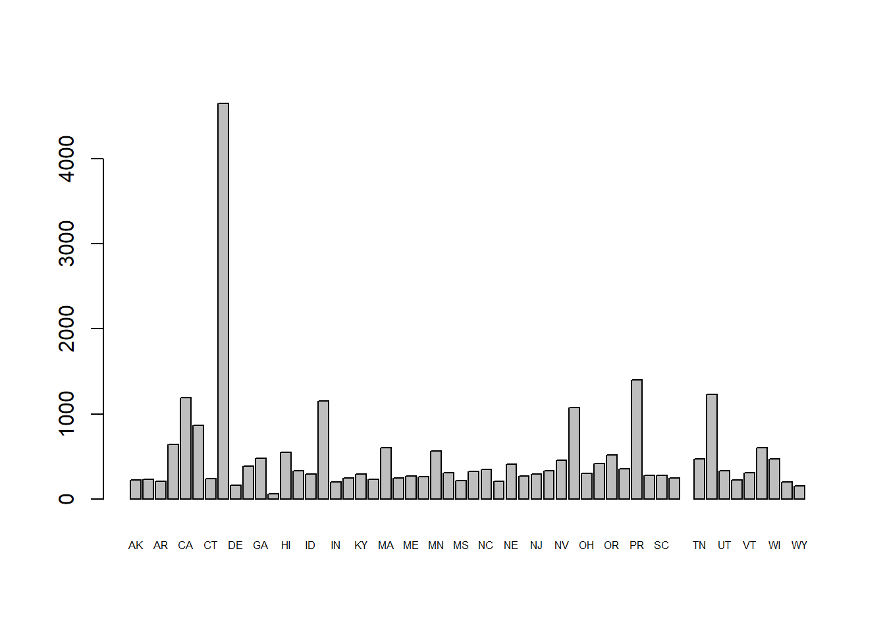
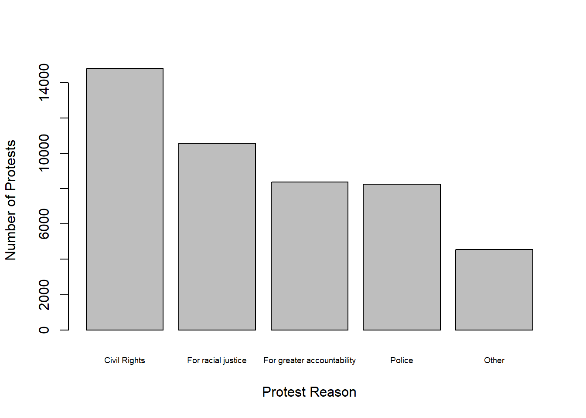

2+2
1*2*3*4
(1+2+3-4)/(5*7)
sqrt(2)
(1+sqrt(5))/2 # golden ratio
2^3
log(2.718281828)
round(2.718281828,3)
12^2
factorial(4)
abs(-4)[1] 4
[1] 24
[1] 0.05714286
[1] 1.414214
[1] 1.618034
[1] 8
[1] 1
[1] 2.718
[1] 144
[1] 24
[1] 4This is the first set of notes for an introduction to R programming from criminology and criminal justice. These notes assume that you have the latest version of R and R Studio installed. We are also assuming that you know how to start a new script file and submit code to the R console. From that basic knowledge about using R, we are going to start with 2+2 and by the end of this set of notes you will load in a dataset on protests in the United States (mostly), create a few plots, count some incidents, and be able to do some basic data manipulations. Our aim is to build a firm foundation on which we will build throughout this set of notes.
R sometimes provides useful help as to how to do something, such as choosing the right function or figuring what the syntax of a line of code should be. Let’s say we’re stumped as to what the sqrt() function does. Just type ?sqrt at the R prompt to read documentation on sqrt(). Most help pages have examples at the bottom that can give you a better idea about how the function works. R has over 7,000 functions and an often seemingly inconsistent syntax. As you do more complex work with R (such as using new packages), the Help tab can be useful.
R, on a very unsophisticated level, is like a calculator.
2+2
1*2*3*4
(1+2+3-4)/(5*7)
sqrt(2)
(1+sqrt(5))/2 # golden ratio
2^3
log(2.718281828)
round(2.718281828,3)
12^2
factorial(4)
abs(-4)[1] 4
[1] 24
[1] 0.05714286
[1] 1.414214
[1] 1.618034
[1] 8
[1] 1
[1] 2.718
[1] 144
[1] 24
[1] 4We will use the c() function a lot. c() combines elements, like numbers and text to form a vector or a collection of values. If we wanted to combine the numbers 1 to 5 we could do
c(1,2,3,4,5)[1] 1 2 3 4 5With the c() function, it’s important to separate all of the items with commas.
Conveniently, if you want to add 1 to each item in this collection, there’s no need to add 1 like c(1+1,2+1,3+1,4+1,5+1)… that’s a lot of typing. Instead R offers the shortcut
c(1,2,3,4,5)+1[1] 2 3 4 5 6In fact, you can apply any mathematical operation to each value in the same way.
c(1,2,3,4,5)*2
sqrt(c(1,2,3,4,5))
(c(1,2,3,4,5)-3)^2
abs(c(-1,1,-2,2,-3,3))[1] 2 4 6 8 10
[1] 1.000000 1.414214 1.732051 2.000000 2.236068
[1] 4 1 0 1 4
[1] 1 1 2 2 3 3Note in the examples below that you can also have a collection of non-numerical items. When combining text items, remember to use quotes around each item.
c("CRIM6000","CRIM6001","CRIM6002","CRIM6003")
c("yes","no","no",NA,NA,"yes")[1] "CRIM6000" "CRIM6001" "CRIM6002" "CRIM6003"
[1] "yes" "no" "no" NA NA "yes"In R, NA means a missing value. We’ll do more exercises later using data containing some NA values. In any dataset in the wild, you are virtually guaranteed to find some NAs. The function is.na() helps determine whether there are any missing values (any NAs). In some of the problems below, we will use is.na().
You can use double quotes or single quotes in R as long as you are consistent. When you have quotes inside the text you need to be particularly careful.
"Lou Gehrig's disease"
'The officer shouted "halt!"'[1] "Lou Gehrig's disease"
[1] "The officer shouted \"halt!\""The backslashes in the above text “protect” the double quote, communicating to you and to R that the next double quote is not the end of the text, but a character that is actually part of the text you want to keep.
The c() function is not the only way to make a collection of values in R. For example, placing a : between two numbers can return a collection of numbers in sequence. The functions rep() and seq() produce repeated values or sequences.
1:10 [1] 1 2 3 4 5 6 7 8 9 105:-5 [1] 5 4 3 2 1 0 -1 -2 -3 -4 -5c(1,1,1,1,1,1,1,1,1,1) [1] 1 1 1 1 1 1 1 1 1 1rep(1,10) [1] 1 1 1 1 1 1 1 1 1 1rep(c(1,2),each=5) [1] 1 1 1 1 1 2 2 2 2 2seq(1, 5)[1] 1 2 3 4 5seq(1, 5, 2)[1] 1 3 5R will also do arithmetic with two vectors, doing the calculation pairwise. The following will compute 1+11 and 2+12 up to 10+20.
1:10 + 11:20 [1] 12 14 16 18 20 22 24 26 28 30Yet, other functions operate on the whole collection of values in a vector. See the following examples:
sum(c(1,10,3,6,2,5,8,4,7,9)) # sum[1] 55length(c(1,10,3,6,2,5,8,4,7,9)) # how many?[1] 10cumsum(c(1,10,3,6,2,5,8,4,7,9)) # cumulative sum [1] 1 11 14 20 22 27 35 39 46 55mean(c(1,10,3,6,2,5,8,4,7,9)) # mean of collection of 10 numbers[1] 5.5median(c(1,10,3,6,2,5,8,4,7,9)) # median of same population[1] 5.5There are also some functions in R that help us find the biggest and smallest values. For example:
max(c(1,10,3,6,2,5,8,4,7,9)) # what is the biggest value in vector?[1] 10which.max(c(1,10,3,6,2,5,8,4,7,9)) # in which "spot" would we find it?[1] 2min(c(1,10,3,6,2,5,8,4,7,9)) # what is the smallest value in vector?[1] 1which.min(c(1,10,3,6,2,5,8,4,7,9)) # in which "spot" would we find it?[1] 1Now that we have covered a lot of fundamental R features, it is time to load in a real dataset. However, before we do that, R needs to know where to find the data file. So we first need to talk about “the working directory”. When you start R, it has a default folder or directory on your computer where it will retrieve or save any files. You can run getwd() to get the current working directory. Here’s our current working directory, which will not be the same as yours.
getwd() [1] "C:/R4crim"Almost certainly this default directory is not where you plan to have all of your datasets and files stored. Instead, you probably have an “analysis” or “project” or “R4crim” folder somewhere on your computer where you would like to store your data and work.
Use setwd() to tell R what folder you want it to use as the working directory. If you do not set the working directory, R will not know where to find the data you wish to import and will save your results in a location in which you would probably never look. Make it a habit to have setwd() as the first line of every script you write. If you know the working directory you want to use, then you can just put it inside the setwd() function.
setwd("C:/Users/greg_/CRIM6002/notes/R4crim") Note that for all platforms, Windows, Macs, and Linux, the working directory only uses forward slashes. So Windows users be careful… most Windows applications use backslashes, but in an effort to make R scripts work across all platforms, R requires forward slashes. Backslashes have a different use in R that you will meet later.
If you do not know how to write your working directory, here comes R Studio to the rescue. In R Studio click Session -> Set Working Directory -> Choose Directory. Then click through to navigate to the working directory that you want to use. When you find it click “Select Folder”. Then look over at the console. R Studio will construct the right setwd() syntax for you. Copy and paste that into your script for use later. No need to have to click through the Session menu again now that you have your setwd() set up.
Now you can use R functions to load in any datasets that are in your working folder. If you have done your setwd() correctly, you shouldn’t get any errors because R will know exactly where to look for the data files. If the working directory that you’ve given in the setwd() isn’t right, R will think the file doesn’t even exist. For example, if you give the path for, say, your R4econ folder, R won’t be able to load data because the file isn’t stored in what R thinks is your working directory. With that out of the way, let’s load a dataset.
We are going to use a dataset of protests in the United States. The data comes from CountLove. The data is a collection of protests that occurred in the United States from 2017 through January 2021. The data includes the date of the protest, the location, the number of attendees, and the reason for the protest. We will load the data and explore it. They stopped collection in February 2021, but you can find more recent crowd data at the Crowd Counting Consortium.
We start by loading in the dataset. I have created a .RData file containing the protest data. This is stored in a special format that R can read quickly. The file is called protests.RData. We will load this file into R using the load() function. Once we have loaded the data, we can see what is in the dataset using the ls() function. This will list all the objects in the current environment. If you have just started using R, most likely the only object you see in your environment is dataProtest.
load("protests.RData")
ls()[1] "dataProtest"To start exploring the protest data, have a look at how many rows (protests) and how many columns (protest features) are in the dataset. Then use the head() function to show the first few rows of the dataset.
# how many rows?
nrow(dataProtest)[1] 38097# how many columns?
ncol(dataProtest)[1] 8head(dataProtest) Date Location Attendees
1 2017-01-15 Bowie State University, Bowie, MD 1500
2 2017-01-16 Johnson City, TN 300
3 2017-01-16 Indianapolis, IN 20
4 2017-01-16 Cincinnati, OH NA
5 2017-01-18 Hartford, CT 300
6 2017-01-19 Washington, DC NA
Event..legacy..see.tags.
1 Healthcare
2 Civil Rights
3 Environment
4 Other (Martin Luther King Jr.)
5 Healthcare (Pro-Planned Parenthood)
6 Executive
Tags Curated
1 Healthcare; For Affordable Care Act Yes
2 Civil Rights; For racial justice; Martin Luther King, Jr. Yes
3 Environment; For wilderness preservation Yes
4 Civil Rights; For racial justice; Martin Luther King, Jr. Yes
5 Healthcare; For Planned Parenthood Yes
6 Executive; Against 45th president Yes
Source
1 http://www.capitalgazette.com/news/ph-ac-cn-aca-rally-0116-20170115-story.html
2 http://www.johnsoncitypress.com/Local/2017/01/16/Hundreds-march-to-honor-Martin-Luther-King-Jr-in-Johnson-City.html?ci=featured&lp=46&ti=
3 http://wishtv.com/2017/01/16/nature-groups-protest-deforestation-of-crown-hill-cemetery-land/
4 http://www.cincinnati.com/picture-gallery/news/2017/01/16/mlk-coalition-march-downtown/96636250/
5 http://www.realhartford.org/2017/01/19/reproductive-freedom-day-of-action/
6 https://malvern-online.com/content/melee-near-trumps-parade-route-police-protesters-clash
Total.Articles
1 1
2 4
3 1
4 1
5 1
6 1We learn that the dataset has 38097 rows and 8 columns. The head() function shows the first few rows of the dataset. The first column is the date of the protest (Date), the second is the location (Location), and the third is the number of attendees (Attendees). The fifth column contains tags describing the purpose of the protest (Tags). The other columns contain other details, like links to news articles about the protest. We will not be using these other features.
Some R functionality relies on packages written by others. For certain basic data tasks, such as selecting certain columns, filtering rows, modifying values, and summarizing data, we will use the dplyr package (usually pronounced dee-ply-er… intended to evoke pliers for data). If you do not have dplyr installed, you can install it by running install.packages("dplyr"). This is a one-time installation. Once per R session, you need to load the package using library().
library(dplyr)Now with dplyr loaded we can slice the protest data to just pick our certain rows, like the first row.
slice(dataProtest, 1) Date Location Attendees
1 2017-01-15 Bowie State University, Bowie, MD 1500
Event..legacy..see.tags. Tags Curated
1 Healthcare Healthcare; For Affordable Care Act Yes
Source
1 http://www.capitalgazette.com/news/ph-ac-cn-aca-rally-0116-20170115-story.html
Total.Articles
1 1There is a more modern “grammar” in R using the pipe operator. This is a way to chain together functions in a more readable way. The pipe operator is |>. It takes the output of the function on the left and passes it as the first argument to the function on the right. Here is the same code as above using the pipe operator.
dataProtest |> slice(1) Date Location Attendees
1 2017-01-15 Bowie State University, Bowie, MD 1500
Event..legacy..see.tags. Tags Curated
1 Healthcare Healthcare; For Affordable Care Act Yes
Source
1 http://www.capitalgazette.com/news/ph-ac-cn-aca-rally-0116-20170115-story.html
Total.Articles
1 1This code takes dataProtest and passes it in to the first argument of the slice() function. The slice() function then returns the first row of the dataset. The code is more readable this way.
You will also see many users using %>% in their code. The %>% pipe operator has been around longer, but the newer |> pipe operator, created in 2021 for R 4.1.0, is faster. You can use either one.
If you want the first 3 rows you can also use slice()
dataProtest |> slice(1:3) Date Location Attendees
1 2017-01-15 Bowie State University, Bowie, MD 1500
2 2017-01-16 Johnson City, TN 300
3 2017-01-16 Indianapolis, IN 20
Event..legacy..see.tags.
1 Healthcare
2 Civil Rights
3 Environment
Tags Curated
1 Healthcare; For Affordable Care Act Yes
2 Civil Rights; For racial justice; Martin Luther King, Jr. Yes
3 Environment; For wilderness preservation Yes
Source
1 http://www.capitalgazette.com/news/ph-ac-cn-aca-rally-0116-20170115-story.html
2 http://www.johnsoncitypress.com/Local/2017/01/16/Hundreds-march-to-honor-Martin-Luther-King-Jr-in-Johnson-City.html?ci=featured&lp=46&ti=
3 http://wishtv.com/2017/01/16/nature-groups-protest-deforestation-of-crown-hill-cemetery-land/
Total.Articles
1 1
2 4
3 1or you can use head() that we used earlier.
dataProtest |> head(3) Date Location Attendees
1 2017-01-15 Bowie State University, Bowie, MD 1500
2 2017-01-16 Johnson City, TN 300
3 2017-01-16 Indianapolis, IN 20
Event..legacy..see.tags.
1 Healthcare
2 Civil Rights
3 Environment
Tags Curated
1 Healthcare; For Affordable Care Act Yes
2 Civil Rights; For racial justice; Martin Luther King, Jr. Yes
3 Environment; For wilderness preservation Yes
Source
1 http://www.capitalgazette.com/news/ph-ac-cn-aca-rally-0116-20170115-story.html
2 http://www.johnsoncitypress.com/Local/2017/01/16/Hundreds-march-to-honor-Martin-Luther-King-Jr-in-Johnson-City.html?ci=featured&lp=46&ti=
3 http://wishtv.com/2017/01/16/nature-groups-protest-deforestation-of-crown-hill-cemetery-land/
Total.Articles
1 1
2 4
3 1I have the general habit of running head() and tail() on any datasets I am working with just to make sure it looks like what I expect. I encourage you to do the same. Many errors can be avoided by just looking at the data.
We may also be interested in only a few columns of the dataset. We can use the select() function to pick out the columns we want. For example, if we only want the date and location of the protest, we can use the following code.
dataProtest |>
select(Date, Location) |>
head(3) Date Location
1 2017-01-15 Bowie State University, Bowie, MD
2 2017-01-16 Johnson City, TN
3 2017-01-16 Indianapolis, INThis code takes dataProtest and passes it to the select() function. The select() function then returns only the Date and Location columns of the dataset. head(3) then returns the first 3 rows of the dataset. Here you can see how the pipe operator can be used to chain together functions in a readable way. Technically, this code is identical to
head(select(dataProtest, Date, Location), 3) Date Location
1 2017-01-15 Bowie State University, Bowie, MD
2 2017-01-16 Johnson City, TN
3 2017-01-16 Indianapolis, INThe computer does not care which approach you take. However, the potential problem with this code is that there is so much distance between head and the 3 at the end. This distance makes it harder to read, understand, and find errors. It will become even more important when we chain many more functions together.
You can also get a column by name using the $ operator. For example, to get the Date column you can use dataProtest$Date. To get the first 10 dates you can use dataProtest$Date[1:10]. To get the first 10 locations you can use dataProtest$Location[1:10].
dataProtest$Date[1:10] [1] "2017-01-15" "2017-01-16" "2017-01-16" "2017-01-16" "2017-01-18"
[6] "2017-01-19" "2017-01-19" "2017-01-20" "2017-01-20" "2017-01-20"dataProtest$Location[1:10] [1] "Bowie State University, Bowie, MD"
[2] "Johnson City, TN"
[3] "Indianapolis, IN"
[4] "Cincinnati, OH"
[5] "Hartford, CT"
[6] "Washington, DC"
[7] "Washington, DC"
[8] "University of Washington, Seattle, WA"
[9] "Westlake Park, Seattle, WA"
[10] "Columbus, OH" So far every time we run some R code the results are dumped to the console. This is R’s default behavior. If you do not indicate otherwise, it will dump the results to the console and promptly forget those results. When we want to store the results, we can use the assignment operator <-. For example, to save the first 10 dates to a variable a you can use
a <- dataProtest$Date[1:10]To save the first 10 locations to a variable b you can use
b <- dataProtest$Location[1:10]Now if we run ls() we will see that we have two new variables a and b in our environment. We can use these variables later in our code.
ls()[1] "a" "b" "dataProtest"If you want to see the contents of a variable you can just type the variable name and run the code. For example, to see the contents of a you can run
a [1] "2017-01-15" "2017-01-16" "2017-01-16" "2017-01-16" "2017-01-18"
[6] "2017-01-19" "2017-01-19" "2017-01-20" "2017-01-20" "2017-01-20"If a line of R code does not have a <-, then the results will not be stored. I would like to simplify our protest dataset by removing some columns that we will not use. I will use the select() function to pick out the columns to keep and use the <- operator to replace the original dataProtest with a new version of dataProtest that only has the columns I want.
dataProtest <- dataProtest |>
select(Date, Location, Attendees, Tags)Now if you run head(dataProtest) you will see that the dataset only has the Date, Location, Attendees, and Tags columns. The other columns have been removed. select() also allows you to indicate which features to drop by prefixing their names with a minus sign. Instead of listing the features we wanted to keep, we could have listed the features we wanted to drop, using select(-Event..legacy..see.tags., -Source, -Curated, -Total.Articles).
We can ask every location if they equal “Philadelphia, PA”.
# let's just ask the first 10, otherwise will print out the first 1,000
dataProtest$Location[1:10]=="Philadelphia, PA" [1] FALSE FALSE FALSE FALSE FALSE FALSE FALSE FALSE FALSE FALSENote the use of the double equal sign ==. This is the “logical” equal. It is not making Location equal to Philadelphia, PA. It is asking if Location is equal to Philadelphia, PA. The result is a vector of TRUE and FALSE values. If the location is Philadelphia, PA, then the result is TRUE. If the location is not Philadelphia, PA, then the result is FALSE.
How many protests occurred in Philadelphia, PA?
dataProtest |>
filter(Location=="Philadelphia, PA") |>
nrow()[1] 193The filter() function is used to select rows that meet a certain condition. In this case, we are selecting rows where the Location is equal to “Philadelphia, PA”. The expression Location=="Philadelphia, PA" will evaluate to TRUE for any row where Location is identical to “Philadelphia, PA” and FALSE otherwise. filter() will keep only those rows where the logical expression evaluates to TRUE eliminating all others (NAs also get eliminated). The nrow() function, which we met earlier, is used to count the number of rows in the dataset. The result is the number of protests that occurred in Philadelphia, PA.
However, this count does not include those with locations like “University of Pennsylvania, Philadelphia, PA”. For example, these ones:
dataProtest |>
filter(Location=="University of Pennsylvania, Philadelphia, PA") Date Location Attendees
1 2018-02-22 University of Pennsylvania, Philadelphia, PA 130
2 2019-04-23 University of Pennsylvania, Philadelphia, PA 10
3 2019-04-23 University of Pennsylvania, Philadelphia, PA 50
4 2019-10-23 University of Pennsylvania, Philadelphia, PA NA
Tags
1 Guns; For greater gun control
2 Other; For animal welfare
3 Other; Against closure/relocation
4 Immigration; For compassionate immigration; Against invited speakerThe Location feature has the phrase “Philadelphia, PA”, but the Location is not exactly identical to “Philadelphia, PA”. It is time to introduce you to grepl(), which is a very powerful function for searching for patterns in text. For now, we will use it simply to search for any Location containing the phrase “Philadelphia, PA”. grepl() returns TRUE if the phrase is found and FALSE if it is not found. For example, to find all protests that occurred in Philadelphia, PA, we can use the following code.
dataProtest |>
filter(grepl("Philadelphia, PA", Location)) |>
head(n=5) Date Location Attendees
1 2017-01-21 Philadelphia, PA 50000
2 2017-01-26 Philadelphia, PA 2360
3 2017-01-29 Philadelphia International Airport, Philadelphia, PA 1910
4 2017-02-02 Philadelphia, PA 800
5 2017-02-04 Philadelphia City Hall, Philadelphia, PA 2000
Tags
1 Civil Rights; For women's rights; Women's March
2 Executive; Against 45th president
3 Immigration; Against travel ban
4 Immigration; Against travel ban
5 Immigration; Against travel banNow we have found many more protests in Philadelphia since some of them were at the airport or at City Hall. Let’s redo that count.
dataProtest |>
filter(grepl("Philadelphia, PA", Location)) |>
nrow()[1] 327We will study grepl() and its variants a lot more later, but for now think of it as “Find” in your word processor. If you are looking for a word in a document, you can use “Find” to locate all instances of that word. grepl() is the same idea. It is looking for a phrase in a text field.
We can include multiple conditions in the filter() function. For example, to find all protests in Philadelphia, PA, before 2018 with more than 1,000 attendees, we can use the following code. Note that & is the logical AND operator. It returns TRUE if both conditions are TRUE and FALSE otherwise. The | operator is the logical OR operator. It returns TRUE if either condition is TRUE and FALSE otherwise.
dataProtest |>
filter(grepl("Philadelphia, PA", Location) &
(Date <= "2017-12-31") &
(Attendees >= 1000)) Date Location Attendees
1 2017-01-21 Philadelphia, PA 50000
2 2017-01-26 Philadelphia, PA 2360
3 2017-01-29 Philadelphia International Airport, Philadelphia, PA 1910
4 2017-02-04 Philadelphia City Hall, Philadelphia, PA 2000
5 2017-03-02 Independence Mall, Philadelphia, PA 1000
6 2017-04-15 Philadelphia, PA 2000
7 2017-04-22 Philadelphia, PA 10000
8 2017-04-29 Philadelphia, PA 2000
9 2017-05-01 Philadelphia, PA 2000
10 2017-05-01 Philadelphia, PA 1000
11 2017-08-16 Philadelphia, PA 2000
Tags
1 Civil Rights; For women's rights; Women's March
2 Executive; Against 45th president
3 Immigration; Against travel ban
4 Immigration; Against travel ban
5 Civil Rights; For religious tolerance
6 Executive; Against 45th president; Tax returns
7 Other; For science; March for Science
8 Environment; Against climate change; People's Climate March
9 Immigration; For compassionate immigration; For worker rights; May Day
10 Collective Bargaining; For better compensation; May Day
11 Civil Rights; For racial justice; Against white supremacy; CharlottesvilleHow many protests occurred in your home state? If not from the US just pick a state like New York “NY” or California “CA” or Pennsylvania “PA”
Where did the protest in the last row of the full dataset occur?
What is the average size of a protest? The summarize() function is used to calculate summary statistics. For example, to calculate the average number of attendees at a protest, we can use the following code.
dataProtest |>
summarize(mean(Attendees)) mean(Attendees)
1 NAHmmm… it looks like there are some missing values in the Attendees column. Rather than just dropping them and computing the average of the rest, R forces us to be intentional about handling NAs. If indeed we want to drop the NAs, then we can use the na.rm=TRUE argument to remove the missing values before calculating the average.
dataProtest |>
summarize(mean(Attendees, na.rm=TRUE)) mean(Attendees, na.rm = TRUE)
1 643.8831Perhaps we are interested any several data summaries at the same time. No problem. Just include them all in summarize().
dataProtest |>
summarize(average = mean(Attendees, na.rm=TRUE),
median = median(Attendees, na.rm=TRUE),
minimum = min(Attendees, na.rm=TRUE),
maximum = max(Attendees, na.rm=TRUE),
NAcount = sum(is.na(Attendees))) average median minimum maximum NAcount
1 643.8831 100 0 725000 15061That was a lot of typing to get a complete set of summary statistics. The summary() function is always available for that.
summary(dataProtest$Attendees) Min. 1st Qu. Median Mean 3rd Qu. Max. NA's
0.00 26.75 100.00 643.88 200.00 725000.00 15061 You can also use it to get a quick summary of the entire dataset.
summary(dataProtest) Date Location Attendees Tags
Length:38097 Length:38097 Min. : 0.00 Length:38097
Class :character Class :character 1st Qu.: 26.75 Class :character
Mode :character Mode :character Median : 100.00 Mode :character
Mean : 643.88
3rd Qu.: 200.00
Max. :725000.00
NA's :15061 The data does not contain a column for the state in which the protest occurred. We can create this column by extracting the state from the Location column. The last two characters of the Location column contain the state abbreviation. We can use the str_sub() function from the stringr package to extract the last two characters of the Location column. The str_sub() function is used to extract a substring from a string. For example, to extract the last two characters of the string “Philadelphia, PA”, we can use the following code. Let’s load the stringr and test out str_sub() on an example.
library(stringr)
str_sub("Philadelphia, PA", -2)[1] "PA"The first argument is the string from which to extract the substring. The second argument is the starting position of the substring. A nice feature of str_sub() is that you can use negative numbers which it interprets as characters from the end. So the -2 tells str_sub() to start at the second to last character. The third argument is the ending position of the substring. Here the -1 means the very last character of the string. If we do not include a third argument, then str_sub() will extract the substring starting at the second argument and continuing to the end of the string.
str_sub("Philadelphia, PA", -2)[1] "PA"There are other R functions that can extract substrings including substring(), substr(), and gsub(). I am introducing you to str_sub() since because it is the only one that lets you put negative numbers in the second and third arguments to easily grab substrings from the end. This is a very useful feature.
With str_sub() now in our toolbox, we can make a new column called state that contains the state in which the protest occurred.
dataProtest <- dataProtest |>
mutate(state=str_sub(Location, -2))
head(dataProtest) Date Location Attendees
1 2017-01-15 Bowie State University, Bowie, MD 1500
2 2017-01-16 Johnson City, TN 300
3 2017-01-16 Indianapolis, IN 20
4 2017-01-16 Cincinnati, OH NA
5 2017-01-18 Hartford, CT 300
6 2017-01-19 Washington, DC NA
Tags state
1 Healthcare; For Affordable Care Act MD
2 Civil Rights; For racial justice; Martin Luther King, Jr. TN
3 Environment; For wilderness preservation IN
4 Civil Rights; For racial justice; Martin Luther King, Jr. OH
5 Healthcare; For Planned Parenthood CT
6 Executive; Against 45th president DCPeeking at the first few rows of dataProtest we can see that there is a new column with the state abbreviation. Please, always check that your code does what you intended to do. Run, check, run, check, one line at a time.
So you can see that mutate() is useful for making new data features computed based on other features. We also will use it to edit or clean up data. Let’s check what these state abbreviations look like.
dataProtest |>
count(state) state n
1 AK 252
2 AL 281
3 AR 174
4 AZ 563
5 CA 4439
6 CO 813
7 CT 708
8 DC 536
9 DE 115
10 FL 1822
11 Fl 1
12 GA 623
13 GU 22
14 HI 182
15 Hi 1
16 IA 470
17 ID 344
18 IL 1273
19 IN 700
20 KS 293
21 KY 821
22 LA 330
23 MA 1265
24 MD 453
25 ME 437
26 MI 1410
27 MN 747
28 MO 800
29 MS 187
30 MT 294
31 Mi 1
32 NC 1150
33 ND 98
34 NE 257
35 NH 266
36 NJ 893
37 NM 402
38 NV 300
39 NY 2688
40 OH 1107
41 OK 324
42 OR 1368
43 PA 1656
44 PR 19
45 RI 194
46 SC 439
47 SD 101
48 TN 576
49 TX 1649
50 UT 421
51 VA 906
52 VT 337
53 WA 1375
54 WI 812
55 WV 266
56 WY 131
57 ce 1
58 co 1
59 iD 1
60 te 1
61 wA 1Here I have used the count() function to count the number of protests in each state. It groups the data by the state column and then counts the number of rows in each group. The result is a new data frame with one column containing the state abbreviation (state) and another column containing the number of protests in that state (count() will always call this one n).
Do you see some problems with our state abbreviations? I see an “Fl”, an “Hi”, and an “Mi” and a few others that do not seem to be correctly capitalized. I also see some abbreviations that are “CE” and “TE”, not states that I know of. Let’s take a closer look at these strange ones. Note that I am introducing the %in% operator. This is a logical operator that asks each value of state whether its value is in the collection to the right of %in%. It is a more compact way to write state=="Fl" | state=="Hi" | state=="Mi" | state=="ce" | state=="co" | state=="iD" | state=="te" | state=="wA". Well, there. I have gone ahead and typed that all out. I hope to never have to type a logical expression with so many ORs again.
dataProtest |>
filter(state %in% c("Fl","Hi","Mi","ce","co","iD","te","wA")) |>
select(state, Location) state Location
1 co Ciudad Juarez, Mexico
2 ce Space
3 Fl Panama City, Fl
4 Mi Wyoming Godfrey-Lee High School, Wyoming, Mi
5 Hi Honolulu, Hi
6 wA Montesano, wA
7 iD City Hall, Pocatello, iD
8 te La Porte County Courthouse in La PortePerhaps even more straightforward, R has a built in list of state abbreviations, state.abb. We can just filter those values of state that are not in this list (I will add Washington DC, Puerto Rico, and Guam too).
dataProtest |>
filter(!(state %in% c(state.abb, "DC", "PR", "GU"))) |>
select(state, Location) state Location
1 co Ciudad Juarez, Mexico
2 ce Space
3 Fl Panama City, Fl
4 Mi Wyoming Godfrey-Lee High School, Wyoming, Mi
5 Hi Honolulu, Hi
6 wA Montesano, wA
7 iD City Hall, Pocatello, iD
8 te La Porte County Courthouse in La PorteLots of different kinds of errors here. Five of them are just lower case. One is in Mexico (we need to drop this one). One is in Space (space is cool so let’s keep that one for fun), and one is in La Porte, which I had to look up La Porte to find that it is in Indiana (IN). Let’s clean this up using mutate().
dataProtest <- dataProtest |>
filter(state != "co") |> # drop Mexico
mutate(state =
case_match(state,
"ce" ~ "Space",
"te" ~ "IN",
.default = toupper(state)))
dataProtest |>
count(state) state n
1 AK 252
2 AL 281
3 AR 174
4 AZ 563
5 CA 4439
6 CO 813
7 CT 708
8 DC 536
9 DE 115
10 FL 1823
11 GA 623
12 GU 22
13 HI 183
14 IA 470
15 ID 345
16 IL 1273
17 IN 701
18 KS 293
19 KY 821
20 LA 330
21 MA 1265
22 MD 453
23 ME 437
24 MI 1411
25 MN 747
26 MO 800
27 MS 187
28 MT 294
29 NC 1150
30 ND 98
31 NE 257
32 NH 266
33 NJ 893
34 NM 402
35 NV 300
36 NY 2688
37 OH 1107
38 OK 324
39 OR 1368
40 PA 1656
41 PR 19
42 RI 194
43 SC 439
44 SD 101
45 Space 1
46 TN 576
47 TX 1649
48 UT 421
49 VA 906
50 VT 337
51 WA 1376
52 WI 812
53 WV 266
54 WY 131Several things are happening here. First, we are using case_match() to change the state abbreviations. Note its structure. The first argument is the variable that we are matching (state). Then we list all the changes that we want to make. We are changing “ce” to “Space” and “te” to “IN”. The .default argument is used to keep all other state abbreviations the same. The toupper() function is used to make sure that all state abbreviations are in upper case. Finally we rerun the count() function to see if our changes worked. All looks good now.
The last feature that we have yet to explore is the Tags column. This column contains a list of reasons for the protest. The format of the tags is to have the reasons separated by a semicolon and a space. For example, a protest might have the tags “Civil Rights; Against pandemic intervention; Police brutality”. We can use the strsplit() function to split the tags into separate reasons. For example, to split the tags in the first three rows of the dataset, we can use the following code.
# what does the tag look like originally?
dataProtest$Tags[1:3][1] "Healthcare; For Affordable Care Act"
[2] "Civil Rights; For racial justice; Martin Luther King, Jr."
[3] "Environment; For wilderness preservation" # now split it
strsplit(dataProtest$Tags[1:3], "; ")[[1]]
[1] "Healthcare" "For Affordable Care Act"
[[2]]
[1] "Civil Rights" "For racial justice"
[3] "Martin Luther King, Jr."
[[3]]
[1] "Environment" "For wilderness preservation"strsplit() returns a list structure. This is a structure in R that has no columns and rows. Since each protest has a different number of tags, once we split them up, they do not fit neatly into fixed columns. We can use unlist() to remove the list structure and create a long vector of all of the tags. And I will use table(), sort(), and tail() to find the most common reasons for a protest.
reasons <- strsplit(dataProtest$Tags, "; ")
reasons <- unlist(reasons)
table(reasons) |> sort() |> tail()reasons
Immigration Other
3543 4556
Police For greater accountability
8254 8376
For racial justice Civil Rights
10575 14807 Clearly, Civil Rights has topped the list. We can use this information to create a new column that is 1 if the protest has the tag “Civil Rights” and 0 otherwise.
dataProtest <- dataProtest |>
mutate(civilrights = as.numeric(grepl("Civil Rights", Tags)))Just like before when we used grepl() to find any text matches for “Philadelphia, PA”, this time we are using it to search Tags for any matches to “Civil Rights”. Again, it returns TRUE if the pattern is found and FALSE otherwise. as.numeric() converts TRUE to 1 and FALSE to 0.
This script is getting long. I have done every step piece by piece with a lot of explanation in between. In practice, you would not do this. You would combine everything into one pipeline that takes in the original dataset and does all the filtering and mutating and selecting to get you the dataset that you want. Here is everything we have done so far compactly written.
load("protests.RData")
dataProtest <- dataProtest |>
select(Date, Location, Attendees, Tags) |>
filter(Location != "Ciudad Juarez, Mexico") |>
mutate(state=str_sub(Location, -2),
state=case_match(state,
"ce" ~ "Space",
"te" ~ "IN",
.default = toupper(state)),
civilrights=as.numeric(grepl("Civil Rights", Tags)))
head(dataProtest) Date Location Attendees
1 2017-01-15 Bowie State University, Bowie, MD 1500
2 2017-01-16 Johnson City, TN 300
3 2017-01-16 Indianapolis, IN 20
4 2017-01-16 Cincinnati, OH NA
5 2017-01-18 Hartford, CT 300
6 2017-01-19 Washington, DC NA
Tags state civilrights
1 Healthcare; For Affordable Care Act MD 0
2 Civil Rights; For racial justice; Martin Luther King, Jr. TN 1
3 Environment; For wilderness preservation IN 0
4 Civil Rights; For racial justice; Martin Luther King, Jr. OH 1
5 Healthcare; For Planned Parenthood CT 0
6 Executive; Against 45th president DC 0Which state had the most protests?
Which state had the least protests?
Which state had the most civil rights protests?
Create a new column that is 1 if the protest has the tag ‘Against pandemic intervention’
Which state had the most protests against pandemic interventions?
Part of what makes R so powerful and useful is that you can create your own functions. In this way, the R user community can expand R’s capabilities to do new tasks. For example, R does not have a built-in function to find the most common value in a collection. We can create our own function to do this. Have a look at this sequence of steps.
a <- table(unlist(reasons))
a |> head()
Against 45th president Against 46th president
1543 3
Against abortion rights Against accusations
444 2
Against administrative leave Against advisor
6 12 max(a)[1] 14807a[a==max(a)]Civil Rights
14807 names(a[a==max(a)])[1] "Civil Rights"You have seen table() and unlist() in action earlier. Then I used max() to find the largest number of protests for a single reason. Then I used the expression a[a==max(a)]. Inside the square brackets, I ask each value of a (the table counts) if they equal the largest value. This returns a logical vector of TRUE and FALSE values. The square brackets will then pick out from a only those values where the logical expression a==max(a) evaluates to TRUE. I use this approach rather than max() or head(1) because it is possible that there are multiple tags that equal the maximum count. Finally, I used names() to get the name of the reason. I can pack all of this into a new function called mostCommon().
mostCommon <- function(x)
{
a <- table(x)
return( names(a[a==max(a)]) )
}This function is now a part of our R session and we can use it as we have other functions like max() or mean(). For example, to find the state with the most protests:
mostCommon(dataProtest$state)[1] "CA"Or the most common date for a protest.
mostCommon(dataProtest$Date)[1] "2018-03-14"What the most common date for civil rights protests in Texas?
dataProtest |>
filter(state=="TX" & civilrights==1) |>
summarize(mostCommon(Date)) mostCommon(Date)
1 2020-06-06What happened in Texas on 2020-06-06?
dataProtest |>
filter(Date=="2020-06-06" & state=="TX") |>
count(Tags) Tags n
1 Civil Rights; For racial justice; For greater accountability; Police 28
2 Civil Rights; For white supremacy; Counter protest 1
3 Guns; Against greater gun control 1This is the height of the George Floyd protests. There were 28 protests recorded in Texas on that day tagged with “Civil Rights; For racial justice; For greater accountability; Police”.
Let’s make a special collection of states that includes PA and all of its bordering states. We can use this collection to filter the dataset to only include protests in these states.
PAplusBorderingstates <- c("PA","DE","MD","NJ","NY","OH","WV")
dataProtest |>
filter(state %in% PAplusBorderingstates) |>
summarize(mostCommon(Date)) mostCommon(Date)
1 2018-03-14As I did earlier, I used the %in% operator to ask each state in dataProtest whether it is a member of the PAplusBorderingstates collection. This returns a logical vector of TRUE and FALSE values. The filter() function then keeps only those rows where the logical expression evaluates to TRUE.
Here we find that 2018-03-14 is the most common date for protests in Pennsylvania and its bordering states. This particular pi-Day was the day of the National School Walkout to protest gun violence.
dataProtest |>
filter(Date=="2018-03-14" & state %in% PAplusBorderingstates) |>
count(Tags) Tags n
1 Civil Rights; For freedom of speech 1
2 Civil Rights; For racial justice; For greater accountability; Police 1
3 Environment; Against fossil fuels 1
4 Guns; Against greater gun control; Counter protest 2
5 Guns; For greater gun control 2
6 Guns; For greater gun control; National Walkout Day 262We can use the group_by() function to group the data by a certain feature. All subsequent operations will be performed separately within each group. For example, let’s total the number of protest attendees by state.
# will double count protesters at multiple protests
dataProtest |>
group_by(state) |>
summarize(sum(Attendees, na.rm=TRUE)) |>
print(n=Inf)# A tibble: 54 × 2
state `sum(Attendees, na.rm = TRUE)`
<chr> <int>
1 AK 35987
2 AL 34919
3 AR 21859
4 AZ 224194
5 CA 3190858
6 CO 428654
7 CT 106285
8 DC 1460536
9 DE 11280
10 FL 413328
11 GA 177400
12 GU 945
13 HI 65548
14 IA 101200
15 ID 45776
16 IL 907239
17 IN 95985
18 KS 45736
19 KY 111992
20 LA 45151
21 MA 507235
22 MD 70662
23 ME 80716
24 MI 214651
25 MN 253084
26 MO 130153
27 MS 21677
28 MT 66652
29 NC 230558
30 ND 13599
31 NE 72351
32 NH 45947
33 NJ 166706
34 NM 88496
35 NV 95383
36 NY 1730569
37 OH 182713
38 OK 74817
39 OR 393032
40 PA 391832
41 PR 15420
42 RI 35288
43 SC 71799
44 SD 16353
45 Space 0
46 TN 166575
47 TX 1136339
48 UT 93693
49 VA 127368
50 VT 68376
51 WA 490261
52 WI 211482
53 WV 31804
54 WY 11929summarize() calculated the total number of attendees within each state. By default, R will print only the first 10 rows of the dataset. I used print(n=Inf) to force R to print all the rows.
We can also calculate the average number of attendees at a protest in each state.
options(pillar.sigfig=5) # less rounding
dataProtest |>
group_by(state) |>
summarize(Total=sum(Attendees, na.rm=TRUE),
Average=mean(Attendees, na.rm=TRUE)) |>
print(n=Inf)# A tibble: 54 × 3
state Total Average
<chr> <int> <dbl>
1 AK 35987 218.10
2 AL 34919 231.25
3 AR 21859 208.18
4 AZ 224194 640.55
5 CA 3190858 1191.1
6 CO 428654 865.97
7 CT 106285 238.84
8 DC 1460536 4651.4
9 DE 11280 163.48
10 FL 413328 382.36
11 GA 177400 476.88
12 GU 945 63
13 HI 65548 550.82
14 IA 101200 328.57
15 ID 45776 293.44
16 IL 907239 1154.2
17 IN 95985 195.49
18 KS 45736 245.89
19 KY 111992 288.64
20 LA 45151 226.89
21 MA 507235 604.57
22 MD 70662 245.35
23 ME 80716 271.77
24 MI 214651 257.99
25 MN 253084 562.41
26 MO 130153 309.15
27 MS 21677 216.77
28 MT 66652 320.44
29 NC 230558 347.75
30 ND 13599 209.22
31 NE 72351 411.09
32 NH 45947 268.70
33 NJ 166706 289.92
34 NM 88496 330.21
35 NV 95383 456.38
36 NY 1730569 1070.2
37 OH 182713 295.65
38 OK 74817 413.35
39 OR 393032 517.15
40 PA 391832 352.05
41 PR 15420 1401.8
42 RI 35288 273.55
43 SC 71799 276.15
44 SD 16353 247.77
45 Space 0 NaN
46 TN 166575 470.55
47 TX 1136339 1228.5
48 UT 93693 331.07
49 VA 127368 225.43
50 VT 68376 309.39
51 WA 490261 604.51
52 WI 211482 473.11
53 WV 31804 200.03
54 WY 11929 151 I used options(pillar.sigfig=5) to show more digits of precision in the output.
Interested in which “state” has the largest average protest size? Use slice_max().
dataProtest |>
group_by(state) |>
summarize(Average=mean(Attendees, na.rm=TRUE)) |>
slice_max(n=1,Average)# A tibble: 1 × 2
state Average
<chr> <dbl>
1 DC 4651.4We can also simply arrange the rows in descending order of average protest size.
dataProtest |>
group_by(state) |>
summarize(Average=mean(Attendees, na.rm=TRUE)) |>
arrange(desc(Average))# A tibble: 54 × 2
state Average
<chr> <dbl>
1 DC 4651.4
2 PR 1401.8
3 TX 1228.5
4 CA 1191.1
5 IL 1154.2
6 NY 1070.2
7 CO 865.97
8 AZ 640.55
9 MA 604.57
10 WA 604.51
# ℹ 44 more rowspivot_wider()/pivot_longer()Note: You may encounter code with melt(), cast(), reshape(), gather(), and spread(). All of these are legacy versions of pivot_wider() and pivot_longer().
pivot_wider() and pivot_longer() reorganize datasets between “wide” and “long” form. pivot_longer() takes many side-by-side columns (say, one column per year) and stacks them into two neat columns, one that says “which year” and one that shows the value, so your table becomes taller and easier to plot or compare. pivot_wider() does the opposite. It takes a tall list of items (like many rows per state and year) and spreads them back out so each thing gets its own column, making the table wider and easier to read at a glance.
pivot_wider() and pivot_longer() are in the tidyr package.
library(tidyr)Let’s say that we are interested in determining which states have fewer civil rights protesters than non-civil rights protesters. With our existing group_by() and sumamrize() skills we can tabulate the number of protesters by state and by type of protest.
dataProtest |>
group_by(state, civilrights) |>
summarize(totAttendees = sum(Attendees, na.rm=TRUE))`summarise()` has grouped output by 'state'. You can override using the
`.groups` argument.# A tibble: 107 × 3
# Groups: state [54]
state civilrights totAttendees
<chr> <dbl> <int>
1 AK 0 15512
2 AK 1 20475
3 AL 0 11321
4 AL 1 23598
5 AR 0 8902
6 AR 1 12957
7 AZ 0 124949
8 AZ 1 99245
9 CA 0 701194
10 CA 1 2489664
# ℹ 97 more rowsNow we can see the protester counts for civil rights and non-civil rights protest for each state. However, it is not clear how to compare the rows within each state.
This is where pivot_wider() comes in handy. We tell pivot_wider() to take the civilrights column and spread its values across columns, creating a column for non-civil rights protester counts and another column for civil rights protester counts. The values that will fill the new table come from totAttendees. Since civilrights takes values 0 and 1, I have asked pivot_wider() to paste “CR” in front of the values so that we get valid R column names.
dataProtest |>
group_by(state, civilrights) |>
summarize(totAttendees = sum(Attendees, na.rm=TRUE)) |>
pivot_wider(names_from = civilrights,
values_from = totAttendees,
names_prefix = "CR")`summarise()` has grouped output by 'state'. You can override using the
`.groups` argument.# A tibble: 54 × 3
# Groups: state [54]
state CR0 CR1
<chr> <int> <int>
1 AK 15512 20475
2 AL 11321 23598
3 AR 8902 12957
4 AZ 124949 99245
5 CA 701194 2489664
6 CO 88782 339872
7 CT 52659 53626
8 DC 477601 982935
9 DE 5507 5773
10 FL 222991 190337
# ℹ 44 more rowsAlmost done. We just need to filter those with fewer civil rights protesters.
dataProtest |>
group_by(state, civilrights) |>
summarize(totAttendees = sum(Attendees, na.rm=TRUE)) |>
pivot_wider(names_from = civilrights,
values_from = totAttendees,
names_prefix = "CR") |>
filter(CR1 < CR0)`summarise()` has grouped output by 'state'. You can override using the
`.groups` argument.# A tibble: 11 × 3
# Groups: state [11]
state CR0 CR1
<chr> <int> <int>
1 AZ 124949 99245
2 FL 222991 190337
3 GU 715 230
4 HI 36868 28680
5 ID 27156 18620
6 IN 49362 46623
7 MT 37871 28781
8 OK 50503 24314
9 PR 15320 100
10 VA 69230 58138
11 WV 24431 7373By spreading the columns out wide made it easier to make our calculation within each state. There is usually a way to avoid pivot_wider() and still get the right answer. For example,
dataProtest |>
group_by(state) |>
summarize(CR0 = sum(if_else(civilrights == 0,
Attendees, 0, missing = 0), na.rm = TRUE),
CR1 = sum(if_else(civilrights == 1,
Attendees, 0, missing = 0), na.rm = TRUE)) |>
filter(CR1 < CR0)# A tibble: 11 × 3
state CR0 CR1
<chr> <dbl> <dbl>
1 AZ 124949 99245
2 FL 222991 190337
3 GU 715 230
4 HI 36868 28680
5 ID 27156 18620
6 IN 49362 46623
7 MT 37871 28781
8 OK 50503 24314
9 PR 15320 100
10 VA 69230 58138
11 WV 24431 7373This approach requires a little trick with the if_else(), including the value of Attendees in the sum if the associated protest is/is not a civil rights protest. Still, having pivot_wider() in your toolbox will come in handy.
Let’s try an example that is a little more complicated. We will determine which states had the largest percent increase in protesters in 2020 compared to the average annual number of protesters 2017-2019. For each state we need a total for 2020 and an average annual number across 2017, 2018, and 2019.
First, let’s derive a few helpful columns. Extract the year from Date and label that year as either 2017-2019 or as 2020. Note that I used 2017_2019 with an underscore as the label since R can confuse a hyphen for a minus sign.
dataProtest |>
filter(Date < "2021-01-01") |>
mutate(year = substring(Date, 1, 4) |> as.numeric(),
timePeriod = ifelse(year %in% 2017:2019,
"2017_2019",
"2020")) |>
select(Attendees, civilrights, Date, year, timePeriod) |>
head() Attendees civilrights Date year timePeriod
1 1500 0 2017-01-15 2017 2017_2019
2 300 1 2017-01-16 2017 2017_2019
3 20 0 2017-01-16 2017 2017_2019
4 NA 1 2017-01-16 2017 2017_2019
5 300 0 2017-01-18 2017 2017_2019
6 NA 0 2017-01-19 2017 2017_2019Second, we can get the total number of protesters by state and time period.
dataProtest |>
filter(Date < "2021-01-01") |>
mutate(year = substring(Date, 1, 4) |> as.numeric(),
timePeriod = ifelse(year %in% 2017:2019,
"2017_2019",
"2020")) |>
group_by(state, timePeriod) |>
summarize(totProtesters = sum(Attendees, na.rm=TRUE))`summarise()` has grouped output by 'state'. You can override using the
`.groups` argument.# A tibble: 107 × 3
# Groups: state [54]
state timePeriod totProtesters
<chr> <chr> <int>
1 AK 2017_2019 30781
2 AK 2020 5196
3 AL 2017_2019 26629
4 AL 2020 7710
5 AR 2017_2019 15652
6 AR 2020 6197
7 AZ 2017_2019 189960
8 AZ 2020 33223
9 CA 2017_2019 2797687
10 CA 2020 391038
# ℹ 97 more rowsThe results is still “grouped” at this point. Be sure to ungroup() so that subsequent calculations do not just occur within each group. The sequence group()/summarize()/ungroup() is so common that there is a shortcut using .by. Either ungroup() or use .by. Then we pivot_wider().
dataProtest |>
filter(Date < "2021-01-01") |>
mutate(year = substring(Date, 1, 4) |> as.numeric(),
timePeriod = ifelse(year %in% 2017:2019,
"2017_2019",
"2020")) |>
summarize(totProtesters = sum(Attendees, na.rm=TRUE),
.by = c(state, timePeriod)) |>
pivot_wider(names_from = timePeriod,
names_prefix = "year",
values_from = totProtesters,
values_fill = 0) |>
arrange(state)# A tibble: 54 × 3
state year2017_2019 year2020
<chr> <int> <int>
1 AK 30781 5196
2 AL 26629 7710
3 AR 15652 6197
4 AZ 189960 33223
5 CA 2797687 391038
6 CO 382137 44987
7 CT 75083 30427
8 DC 1393990 64540
9 DE 6935 4195
10 FL 331471 81351
# ℹ 44 more rowsFinally, we are in a position to compute the percent change, sort, and display those states with the largest percentage change.
dataProtest |>
filter(Date < "2021-01-01") |>
mutate(year = substring(Date, 1, 4) |> as.numeric(),
timePeriod = ifelse(year %in% 2017:2019,
"2017_2019",
"2020")) |>
summarize(totProtesters = sum(Attendees, na.rm=TRUE),
.by = c(state, timePeriod)) |>
pivot_wider(names_from = timePeriod,
names_prefix = "year",
values_from = totProtesters,
values_fill = 0) |>
mutate(ave2017_2019 = year2017_2019/3,
pctChange = 100*(year2020-ave2017_2019)/ave2017_2019) |>
select(state, pctChange) |>
slice_max(pctChange, n = 5)# A tibble: 5 × 2
state pctChange
<chr> <dbl>
1 ND 180.08
2 SC 153.41
3 VA 128.58
4 LA 126.00
5 MS 125.13We will finish our introduction to R by exploring Tags a little more through some barplots and a word cloud.
I will start by a special version of mostCommon() that will take a collection of tags and return the most common tag. This will allow us to find the most common protest type in the dataset. This function splits up the tags as we did before, and then applies mostCommon() to the resulting collection of tags.
mostCommonType <- function(x)
{
reasons <- strsplit(x, "; ")
reasons <- unlist(reasons)
return( mostCommon(reasons) )
}
# test it out
dataProtest$Tags[1:10] [1] "Healthcare; For Affordable Care Act"
[2] "Civil Rights; For racial justice; Martin Luther King, Jr."
[3] "Environment; For wilderness preservation"
[4] "Civil Rights; For racial justice; Martin Luther King, Jr."
[5] "Healthcare; For Planned Parenthood"
[6] "Executive; Against 45th president"
[7] "Executive; For 45th president; Counter protest"
[8] "Civil Rights; For racial justice; Against invited speaker"
[9] "Executive; Against 45th president"
[10] "Civil Rights; For women's rights; Women's March" mostCommonType(dataProtest$Tags[1:10])[1] "Civil Rights"Now we can use mostCommonType() to find the most common protest type in the dataset. Note that mostCommonType() can return more than one value. summarize() will complain if it gets more than one value.
dataProtest |>
group_by(state) |>
summarize(mostCommonType(Tags)) |>
print(n=Inf)Warning: Returning more (or less) than 1 row per `summarise()` group was deprecated in
dplyr 1.1.0.
ℹ Please use `reframe()` instead.
ℹ When switching from `summarise()` to `reframe()`, remember that `reframe()`
always returns an ungrouped data frame and adjust accordingly.`summarise()` has grouped output by 'state'. You can override using the
`.groups` argument.# A tibble: 58 × 2
# Groups: state [54]
state `mostCommonType(Tags)`
<chr> <chr>
1 AK Civil Rights
2 AL Civil Rights
3 AR Civil Rights
4 AZ Civil Rights
5 CA Civil Rights
6 CO Civil Rights
7 CT Civil Rights
8 DC Civil Rights
9 DE Civil Rights
10 FL Civil Rights
11 GA Civil Rights
12 GU Civil Rights
13 GU Other
14 HI Other
15 IA Civil Rights
16 ID Civil Rights
17 IL Civil Rights
18 IN Civil Rights
19 KS Civil Rights
20 KY Civil Rights
21 LA Civil Rights
22 MA Civil Rights
23 MD Civil Rights
24 ME Civil Rights
25 MI Civil Rights
26 MN Civil Rights
27 MO Civil Rights
28 MS Civil Rights
29 MT Civil Rights
30 NC Civil Rights
31 ND Civil Rights
32 NE Civil Rights
33 NH Civil Rights
34 NJ Civil Rights
35 NM Civil Rights
36 NV Civil Rights
37 NY Civil Rights
38 OH Civil Rights
39 OK Civil Rights
40 OR Civil Rights
41 PA Civil Rights
42 PR Against corruption
43 PR Against state executive
44 PR Executive
45 RI Civil Rights
46 SC Civil Rights
47 SD Civil Rights
48 Space Against 45th president
49 Space Executive
50 TN Civil Rights
51 TX Civil Rights
52 UT Civil Rights
53 VA Civil Rights
54 VT Civil Rights
55 WA Civil Rights
56 WI Civil Rights
57 WV Civil Rights
58 WY Civil Rights So let’s redo that with reframe() instead. reframe() is like summarize() but allows for multiple values.
dataProtest |>
group_by(state) |>
reframe(mostCommonType(Tags)) |>
print(n=Inf)# A tibble: 58 × 2
state `mostCommonType(Tags)`
<chr> <chr>
1 AK Civil Rights
2 AL Civil Rights
3 AR Civil Rights
4 AZ Civil Rights
5 CA Civil Rights
6 CO Civil Rights
7 CT Civil Rights
8 DC Civil Rights
9 DE Civil Rights
10 FL Civil Rights
11 GA Civil Rights
12 GU Civil Rights
13 GU Other
14 HI Other
15 IA Civil Rights
16 ID Civil Rights
17 IL Civil Rights
18 IN Civil Rights
19 KS Civil Rights
20 KY Civil Rights
21 LA Civil Rights
22 MA Civil Rights
23 MD Civil Rights
24 ME Civil Rights
25 MI Civil Rights
26 MN Civil Rights
27 MO Civil Rights
28 MS Civil Rights
29 MT Civil Rights
30 NC Civil Rights
31 ND Civil Rights
32 NE Civil Rights
33 NH Civil Rights
34 NJ Civil Rights
35 NM Civil Rights
36 NV Civil Rights
37 NY Civil Rights
38 OH Civil Rights
39 OK Civil Rights
40 OR Civil Rights
41 PA Civil Rights
42 PR Against corruption
43 PR Against state executive
44 PR Executive
45 RI Civil Rights
46 SC Civil Rights
47 SD Civil Rights
48 Space Against 45th president
49 Space Executive
50 TN Civil Rights
51 TX Civil Rights
52 UT Civil Rights
53 VA Civil Rights
54 VT Civil Rights
55 WA Civil Rights
56 WI Civil Rights
57 WV Civil Rights
58 WY Civil Rights So why does Puerto Rico show up three times in these results?
dataProtest |>
filter(state=="PR") |>
pull(Tags) |>
strsplit("; ") |>
unlist() |>
table() |>
sort()
Against austerity measures Day Without a Woman
1 1
Families Families Belong Together
1 1
For greater accountability For racial justice
1 1
For women's rights For worker rights
1 1
May Day Police
1 1
Civil Rights For compassionate immigration
2 2
Immigration For Puerto Rico aid
2 3
Other Against corruption
4 11
Against state executive Executive
11 11 There are three tags all with 11 protests each, a three-way tie for the largest number of protests. So mostCommonType() returns all three tags.
R has a lot of built-in functions for creating plots and graphics. We will use the barplot() function to create a bar plot of the average number of attendees at protests in each state.
a <- dataProtest |>
group_by(state) |>
summarize(Attendees=mean(Attendees, na.rm=TRUE))
barplot(a$Attendees, names.arg = a$state)
The state name labels are two big so we can shrink the “character expansion” (cex) by half.
barplot(a$Attendees, names.arg = a$state, cex.names=0.5)
We can also make the plot horizontal.
barplot(a$Attendees, names.arg = a$state,
cex.names=0.3,
horiz=TRUE,
col="seagreen",
xlim=c(0,5000))We can also create a bar plot of the number of protests for the top 5 reasons.
reasons <- dataProtest$Tags |>
strsplit(";") |>
unlist() |>
table() |>
sort(decreasing = TRUE) |>
head(5)
barplot(reasons,
ylab="Number of Protests",
xlab="Protest Reason",
cex.names = 0.6) # shrink bar labels 30%
For figures and plots, always use a vector graphics format. That means export your graphics using SVG or EMF. These formats are scalable and will look good at any size. You can insert these graphics into Word, PowerPoint, or Google Docs. PNG graphics tend to look blurry in reports and presentations. Show some pride in your data work by making sure that your final product looks great. Stick with SVG or EMF or another vector graphics format.
We will end with a beautiful word cloud of the protest tags.
library(wordcloud2)
dataProtest$Tags |>
strsplit(split="; ") |>
unlist() |>
table() |>
wordcloud2()As you saw in this script, R has a lot of functions. We started of figuring how to set our file path so R knows where to look for files. We loaded the data from a .RData file and we listed all the objects in R’s environment.
setwd() set working directoryload() load R objects saved in a .RData filels() list objects in the R environmentR, of course, has all the basic math operations that you might need to do with a set of numbers. Like
sqrt()log(), note that log() is the natural log as it is in most mathematical programming languagesround() round to the nearest integerabs() absolute valuelength() number of elements in a collectioncumsum() cumulative sumsum(), mean(), median(), min(), max()Then we worked through some basic functions to work with R objects.
c() combine numbers and other R objects together in a collectionnrow(), ncol()head(), tail()When working with datasets, we covered all the standard functions needed to manipulate data.
slice(), slice_max(), slice_min() pick out rows by there position in the dataset or by the max/min valuesfilter() pick out rows based on a logical expression about what is in that rowselect() pick out columns by namecount() count the number of rows in a dataset or the number of rows in a dataset by groupsmutate() create new columns or edit existing columnsstr_sub() extract substrings from a stringcase_match() used inside mutate() to create new columns based on the values in another columngroup_by(), summarize(), reframe() used to summarize data by groupsarrange() sort rows in a datasetpivot_wider() and pivot_longer() to organize data in wide or long formWe also covered some more advanced functions.
grepl() search for patterns in textsummary() get a summary of a dataset or any set of numberssort() sort a collection of numbersunlist() remove the list structure from a listnames() get the names of the elements in a collectionas.numeric() convert objects to numbers, we specifically converted logical values to 1s and 0sstrsplit() split a string into a list of substringsAnd we made some graphics too.
barplot() create a bar plotwordcloud2() create a word cloudIn addition we even created our own new functions!
mostCommon() find the most common value in a collectionmostCommonType() find the most common tag in a string containing semi-colon separated tagsBefore looking at the solutions, try out the exercises for yourself. All the skills you will be learning build on the fundamentals presented in this script. It would be a good idea to go through this a second time to make sure you understand everything.
dataProtest |>
slice(10000) |>
select(Date) Date
1 2018-03-24dataProtest |>
slice(4289) |>
select(Tags) Tags
1 International; For Palestine; IsraeldataProtest |>
filter(state == "CA") |>
count() n
1 4439dataProtest |>
select(state, Location) |>
tail(1) state Location
38096 CA San Francisco, CAdataProtest |>
count(state) |>
slice_max(n,
with_ties = TRUE) # in case of ties state n
1 CA 4439dataProtest |>
count(state) |>
slice_min(n, with_ties = TRUE) state n
1 Space 1dataProtest |>
filter(civilrights==1) |>
count(state) |>
slice_max(n, with_ties = TRUE) state n
1 CA 1424dataProtest <- dataProtest |>
mutate(pandemic = as.numeric(grepl("Against pandemic intervention", Tags)))dataProtest |>
filter(pandemic == 1) |>
count(state) |>
slice_max(n, with_ties = TRUE) state n
1 CA 227dataProtest |>
group_by(civilrights) |>
summarize(mean(Attendees, na.rm=TRUE))# A tibble: 2 × 2
civilrights `mean(Attendees, na.rm = TRUE)`
<dbl> <dbl>
1 0 342.17
2 1 1113.0 # Yes, civil rights protests are larger on average than non-civil rights protests.